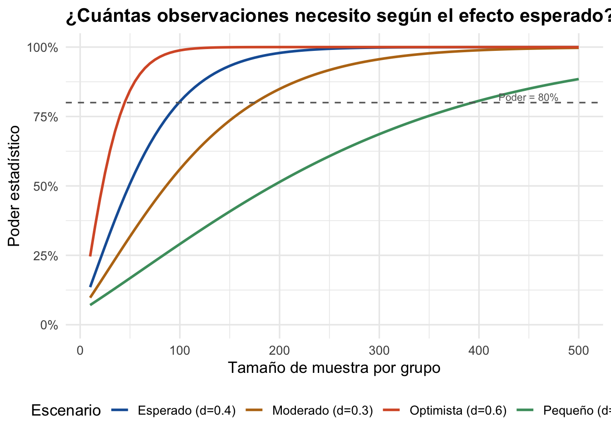
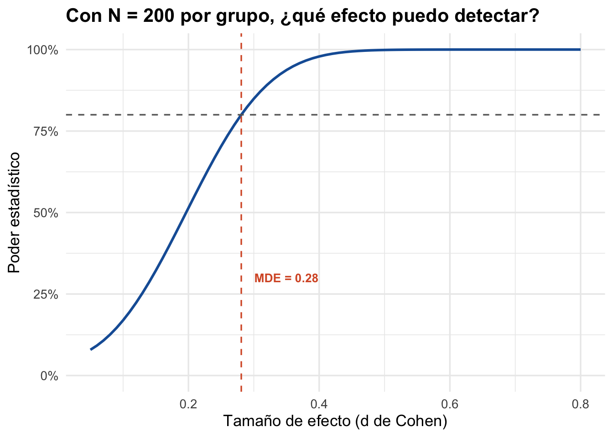

#> d de Cohen: 0.4#> n por grupo: 100#> Total: 200Este anexo contiene el código R completo para el taller práctico de cálculo de poder estadístico y tamaño de muestra. Para la teoría y explicación, consulte el capítulo correspondiente.
Usted calculará el tamaño de muestra para un programa ficticio de capacitación agrícola que busca aumentar la producción (ton/ha) en fincas beneficiarias.
#> d de Cohen: 0.4#> n por grupo: 100#> Total: 200library(ggplot2)
library(pwr)
n_vals <- seq(10, 500, by = 5)
escenarios <- data.frame(
d = c(0.2, 0.3, 0.4, 0.6),
etiqueta = c("Pequeño (d=0.2)", "Moderado (d=0.3)",
"Esperado (d=0.4)", "Optimista (d=0.6)"))
curvas <- do.call(rbind, lapply(1:nrow(escenarios), function(i) {
poder <- sapply(n_vals, function(n)
pwr.t.test(n = n, d = escenarios$d[i],
sig.level = 0.05, type = "two.sample")$power)
data.frame(n = n_vals, poder = poder, escenario = escenarios$etiqueta[i])
}))
ggplot(curvas, aes(x = n, y = poder, color = escenario)) +
geom_line(linewidth = 1) +
geom_hline(yintercept = 0.80, linetype = "dashed", color = "gray40") +
annotate("text", x = 480, y = 0.82, label = "Poder = 80%",
color = "gray40", size = 3, hjust = 1) +
scale_color_manual(values = c("#185FA5", "#BA7517", "#D85A30", "#4A9C6D")) +
scale_y_continuous(labels = scales::percent_format(), limits = c(0, 1)) +
labs(x = "Tamaño de muestra por grupo", y = "Poder estadístico",
color = "Escenario",
title = "¿Cuántas observaciones necesito según el efecto esperado?") +
theme_minimal(base_size = 13) +
theme(legend.position = "bottom", plot.title = element_text(face = "bold"))
#> Sin clustering: 100 fincas por grupo#> DEFF: 2.92#> Con clustering: 292 fincas por grupo#> Comunidades por grupo: 12#> MDE (d de Cohen): 0.281#> MDE en ton/ha: 0.7#> Esto es 8.8 % de la producción promediod_rango <- seq(0.05, 0.8, by = 0.01)
poder_rango <- sapply(d_rango, function(d)
pwr.t.test(n = n_disponible, d = d, sig.level = 0.05, type = "two.sample")$power)
ggplot(data.frame(d = d_rango, poder = poder_rango), aes(d, poder)) +
geom_line(color = "#185FA5", linewidth = 1) +
geom_hline(yintercept = 0.80, linetype = "dashed", color = "gray40") +
geom_vline(xintercept = mde$d, linetype = "dashed", color = "#D85A30") +
annotate("text", x = mde$d + 0.02, y = 0.3,
label = paste0("MDE = ", round(mde$d, 2)),
color = "#D85A30", hjust = 0, fontface = "bold", size = 3.5) +
scale_y_continuous(labels = scales::percent_format(), limits = c(0, 1)) +
labs(x = "Tamaño de efecto (d de Cohen)", y = "Poder estadístico",
title = paste0("Con N = ", n_disponible,
" por grupo, ¿qué efecto puedo detectar?")) +
theme_minimal(base_size = 13) +
theme(plot.title = element_text(face = "bold"))
Compare el MDE con el efecto esperado de su programa. Si el MDE es mayor, necesita más muestra o aceptar que podría no detectar el efecto. Si es menor, su diseño es adecuado.